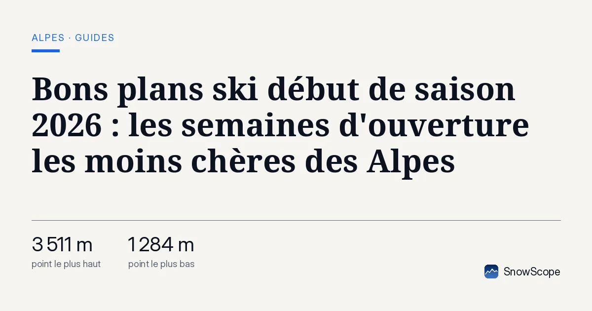

Bons plans ski début de saison 2026 : les semaines d'ouverture les moins chères des Alpes
Les jours les moins chers de la saison de ski sont les premiers. Valloire-Valmeinier ouvre les 5 et 6 décembre 2026 avec un forfait à 20 EUR, Les 2 Alpes vendent leur week-end d'ouverture du 28 et 29 novembre à 42 EUR, et Les Orres proposent 34 EUR la journée du 5 au 11 décembre. Nous avons réuni les meilleurs bons plans de début de saison dans un seul calendrier et vérifié l'enneigement habituel à ces dates.
Consultez les prévisions neige en temps réel pour Les Deux Alpes sur l'application SnowScopeHauteurs de neige, alertes poudreuse et carte 3D, gratuitement.
Fin novembre : le premier week-end sur la neige
Les 2 Alpes ouvrent la saison les 28 et 29 novembre 2026 avec un forfait journée adulte à 42 EUR, contre 68 EUR pour leur forfait flexible habituel. Le glacier qui surplombe la station permet cette ouverture si précoce : à mi-montagne, à 2 397 m, notre historique d'enneigement sur 46 hivers passés indique 24 cm pour un mois de novembre habituel, et le sommet est bien plus enneigé.
Livigno lance sa promotion le même week-end. Du 28 novembre au 18 décembre 2026, la journée adulte coûte 51,5 EUR et les 6 jours 258,5 EUR. Du 19 au 25 décembre, le tarif journée passe à 66 EUR, puis à 74,5 EUR à partir du 26 décembre.
Début décembre : les vraies bonnes affaires
Le week-end d'ouverture de Valloire-Valmeinier, les 5 et 6 décembre 2026, est le bon plan le moins cher que nous ayons trouvé : 20 EUR le forfait, patinoire incluse. Son tarif journée standard pour l'hiver est de 54,9 EUR. À mi-montagne, la station passe habituellement de 24 cm en novembre à 67 cm en décembre, donc le week-end d'ouverture se déroule souvent sur un enneigement encore jeune.
Les Orres appliquent un calendrier de prix : 34 EUR la journée du 5 au 11 décembre, 38,5 EUR du 12 au 18 décembre et 45,5 EUR à partir du 19 décembre. Montgenèvre maintient 45,5 EUR jusqu'au 18 décembre, puis 56 EUR. Dans la vallée d'Aoste, Monterosa Ski vend en ligne à des tarifs variables : le prix journée le plus bas observé était de 40 EUR, le plus haut de 71 EUR.
La semaine avant Noël : 6 jours à moindre coût
Pour une semaine complète, Serre Chevalier reste le grand classique des bons plans de début de saison : 276 EUR pour 6 jours, de l'ouverture au 18 décembre 2026, contre 345 EUR du 19 décembre au 1er janvier 2027. La promotion de Livigno à 258,5 EUR court jusqu'à la même date.
L'enneigement progresse généralement vite en décembre. À mi-montagne, un mois de décembre habituel compte 77 cm aux 2 Alpes, 64 cm à Montgenèvre, 57 cm à Serre Chevalier, 54 cm aux Orres, 48 cm à Livigno et 35 cm à Monterosa Ski. Plus on avance dans le mois de décembre, meilleures sont les chances d'enneigement.
Comment choisir son bon plan de début de saison
Pour être sûr de skier, misez sur l'altitude : Les 2 Alpes fin novembre, ou Montgenèvre et Valloire-Valmeinier en décembre. Pour la facture la plus basse sur une semaine, Serre Chevalier et Livigno avant le 18 décembre sont les valeurs les plus sûres, avec de grands domaines qui ouvrent davantage de pistes au fil de l'enneigement.
Monterosa Ski est la station à surveiller au jour le jour : ne réservez ses tarifs en ligne les plus bas qu'après une bonne chute de neige, car son mois de décembre habituel est le moins enneigé de la liste.
Dormir sur les dates du bon plan
Les semaines de début de saison sont aussi les moins chères pour l'hébergement, mais seulement si vos nuitées correspondent à l'offre. La carte de cet article ouvre chaque station aux dates de son bon plan, avec des séjours à moins de 120 EUR la nuit : le week-end du 27 au 29 novembre pour Les 2 Alpes, du 4 au 6 décembre pour Valloire-Valmeinier, du 5 au 11 décembre pour Les Orres, et du 12 au 18 décembre pour Livigno et Serre Chevalier.
Les dates d'ouverture dépendent toujours de l'enneigement. Consultez le site de la station quelques jours avant votre départ, et achetez le forfait en ligne quand il est moins cher.
Conseils aux skieurs
- Bon plan le moins cher : Valloire-Valmeinier, 20 EUR les 5 et 6 décembre 2026.
- Premier week-end sur la neige : Les 2 Alpes, 42 EUR les 28 et 29 novembre 2026.
- Semaine la moins chère avant Noël : Livigno 258,5 EUR ou Serre Chevalier 276 EUR pour 6 jours, jusqu'au 18 décembre.
- Vérifiez toujours la date d'ouverture : elle dépend de l'enneigement.
Autres cartes (sites externes)
Références et crédits
- Les 2 Alpes, official ski pass shop, opening weekend offer www.skipass-2alpes.com/fr/forfaits/ski
- Les 2 Alpes, official ski pass shop, prices 2026-27 www.skipass-2alpes.com/en/pricing
- Valloire, official ski pass shop (Galibier-Thabor), winter 2026-27 skipass.valloire.com/fr/
- Les Orres, official ski pass prices 2026-27 www.lesorres.com/forfaits-de-ski
- Livigno, official ski pass price list 2026-27 (PDF) www.livigno.eu/hubfs/tariffe_26-27.pdf
- Montgenèvre, official ski pass prices 2026-27 skipass.montgenevre.com/fr/tarifs-guichet
- Serre Chevalier, official booking site, ski passes 2026-27 reservation.serre-chevalier.com/achetez-vos-ski-pass-serre-chevalier-et-autres-prestations.html
- Monterosa Ski, official dynamic pricing page 2026-27 monterosaski.eu/en/tariffazione-dinamica-monterosa-ski-19318
À propos de ces chiffres
Chiffres de neige : historique SnowScope, 46 hivers passés (1980-81 à 2025-26) à trois altitudes de la station, un modèle du passé corrigé de l'altitude (une estimation pour une zone, pas les bulletins de la station). Remontées, pistes et accès : les sources ci-dessous, vérifiées à la date indiquée.
Citer ce bulletin
Pour la recherche, l'enseignement ou la presse : chiffres et graphiques réutilisables librement sous CC BY 4.0 avec cette citation.
SnowScope (2026), Bons plans ski début de saison 2026 : les semaines d'ouverture les moins chères des Alpes, https://snowscope.app/blog/fr/2026/11/early-season-ski-deals-2026-cheapest-opening-weeks-alps.html, consulté le 2026-11-19
SnowScope (Atlas Labs). (2026, November 19). Bons plans ski début de saison 2026 : les semaines d'ouverture les moins chères des Alpes. SnowScope snow reports. https://snowscope.app/blog/fr/2026/11/early-season-ski-deals-2026-cheapest-opening-weeks-alps.html
BibTeX
@misc{snowscope2026earlyseasonskideals2026c,
author = {{SnowScope (Atlas Labs)}},
title = {Bons plans ski début de saison 2026 : les semaines d'ouverture les moins chères des Alpes},
year = {2026},
month = nov,
howpublished = {\url{https://snowscope.app/blog/fr/2026/11/early-season-ski-deals-2026-cheapest-opening-weeks-alps.html}},
note = {Published 2026-11-19 12:42 UTC; accessed 2026-11-19}
}· CC BY 4.0 · Méthodes, données et outils →
Les Deux Alpes : neige et température selon l'altitude, cet hiver vs l'hiver dernier (outils) →
Suivre Les Deux Alpes
Gratuit : un message quand la neige arrive, et la météo chaque matin.
Autres bulletins neige

À Monterosa Ski, le forfait journée en ligne va de 40,00 à 71,00 EUR. En décembre, la neige est en altitude : 124 cm habituels à 3 030 m, 6 cm à 1 207 m.

Skiez à Livigno pour 51,50 EUR par jour avant le 18 décembre, quand la neige au sommet atteint 30 cm dans 100 % des hivers passés.

Valloire-Valmeinier propose 131 km de pistes et 98 % de chances d'avoir 30 cm de neige à mi-montagne mi-décembre.